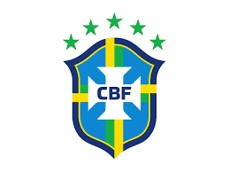
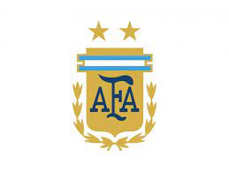
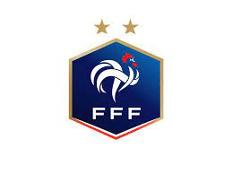
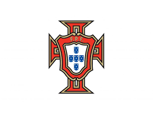

World Popular Football Teams
Football, also known as soccer in some countries, is a globally popular sport played and watched by millions. It involves two teams of eleven players each, aiming to score goals by getting a ball into the opposing team's net. The game is played on a rectangular field with goalposts at either end.Football is known for its simplicity, requiring minimal equipment – a ball and a pitch. The sport emphasizes teamwork, strategy, and skill, making it a universal language that transcends cultural and linguistic barriers.
Brazil
Brazil football clubs, known for their passion and skill, dominate the global soccer scene. Flamengo, Corinthians, and São Paulo FC are iconic, with rich histories, fervent fan bases, and numerous championships.
Argentina
Argentina has a rich football culture with renowned clubs like Boca Juniors and River Plate. Their passionate fans, iconic stadiums, and a history of producing top talents contribute to global football excellence.
France
France boasts renowned football clubs like Paris Saint-Germain (PSG), Olympique de Marseille, and AS Monaco. PSG, based in Paris, stands out as a force, attention with star-studded lineups and competitive performances.
Portugal
Portugal has notable football clubs like FC Porto, SL Benfica, and Sporting CP. These teams have a rich history and record, with Sporting CP winning the Primeira Liga, showcasing Portugal's football prowess.